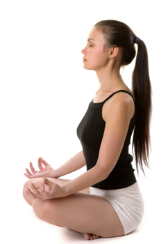

Ujayi Pranayama
INTRODUCTION
Ujayi is a Sanskrit word meaning to be happy.
It is a verb, and is used to describe the feeling of being happy.
It is also used to describe the state of being happy.
The sound is produced because of the friction of air within the throat; a typical sound like the ocean is made.
The sound is completely different from the sound emitted from the larynx) thence, the Pranayama is termed as Ujjayi Pranayama.
By this, it is also called “Sound Breath” or “Ocean sound breath”.
As the throat passage is narrowed thus, too, is that the airway, the passage of air through that creates a “rushing” sound.
The length and speed of the breath are controlled by the diaphragm,
the strengthening of that is, in part, and the aim of Ujjayi Pranayama.
The diaphragm is the muscle that is responsible for the movement of the air through the throat.
The inhalations and exhalations area unit equal in a period, and the area unit controlled in a very manner that causes no
distress to the professional person. Ujjayi Pranayama helps to equalize and calming the breath that will increase the
action of oxygenation and build internal body heat.
STEPS:
1.> Sit in any meditative pose like Padmasana (Lotus pose) with eye closed and try to keep your spine erect.
2.> Take a long, deep breath slowly from both the nostril (inhale or breath in).
3.> While breath in trying to contract the throat and feel the touch of air in your throat.
4.> Remember one thing air should not touch inside the nose.
5.> As air touches the throat a peculiar sound is produced.
6.> Enable the breath to be light and relaxed as you slightly contract the rear of your throat, making a gentle hissing sound as you inhale and out. The sound isn’t forced; however, it ought to be loud enough so if somebody came near you they’d hear it.
7.> Now breathe out by closing your right nostril and exhale from the left nostril. Try to produce the sound ‘HHHHHAAAA’ while exhaling.

WHAT ARE THE BENEFITS ?
1. It boosts the focusing power of the mind.
2. The body becomes healthy, strong and lustrous.
3. It generates internal heat.
4. Gives a positive attitude.
5. Very helpful in clearing blocked arteries regulates cholesterol.
6. Helps in cataracts and sinus problems, Rheumatism and migraine also.
7. It lowers the risk of heart attacks.
8. Prevents thyroid problems and makes voice sweet and melodious.
9. Best for those people who are in the singing profession.
10. Beneficial in chronic cold, cough, indigestion, liver problems, dysentery, fever and other diseases.
11. Best for arousing Kundalini, meditation.
12. Increases the concentration power.
13. Improve lisping problems in children.
14. Very helpful in Asthma problems and other respiratory diseases.